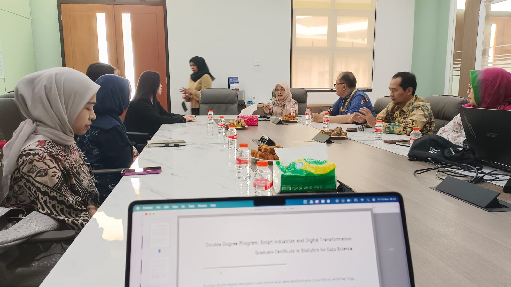
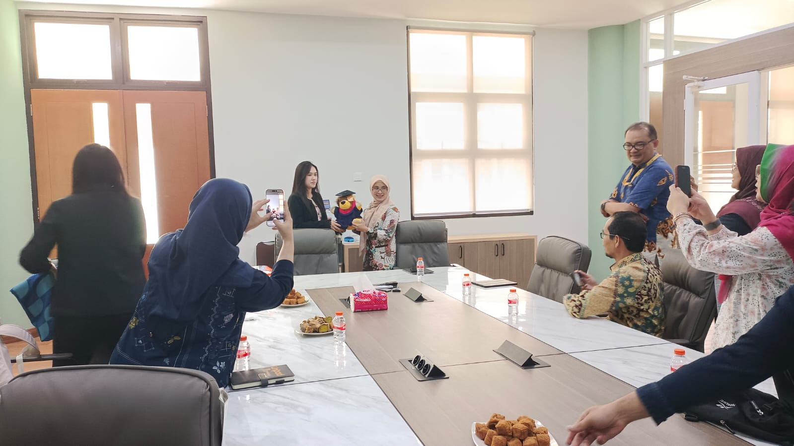
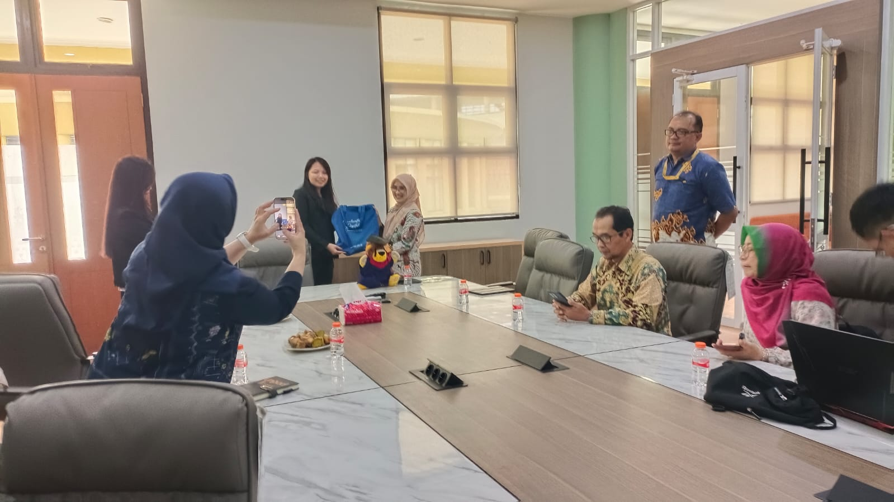
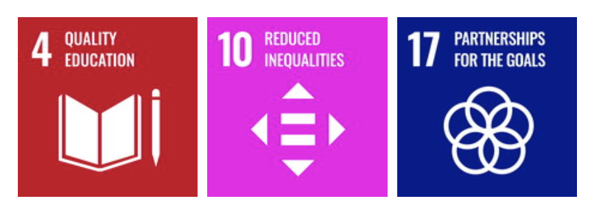

Jatinangor, 13 November 2026 — Universitas Padjadjaran (Unpad) menerima kunjungan perwakilan National University of Singapore (NUS) dalam pertemuan koordinasi untuk memperkuat dan menindaklanjuti kerja sama internasional di bidang pendidikan pascasarjana. Diskusi berlangsung pada Jumat, 13 November 2026, pukul 09.00–10.00 WIB, bertempat di Ruang Rapat Direktur Akademik Unpad.
Pertemuan dihadiri Direktur Akademik Unpad, Prof. Dr. Aliya Nur Hasanah, S.Si., Apt., M.Si., bersama dua perwakilan NUS, yakni Summer Chan dan Marlene Gou. Dari Fakultas Matematika dan Ilmu Pengetahuan Alam (FMIPA), hadir Dr. Irlandi Ginanjar, M.Si. selaku perwakilan urusan kerja sama internasional, serta Prof. Dr. I Gede Nyoman Mindra Jaya, M.Si. selaku Ketua Program Studi S2 Statistika Terapan.
Fakultas Perikanan dan Ilmu Kelautan (FPIK) turut diwakili oleh Dr. Sunarto, S.Pi., M.Si. selaku Dekan, dan Fittrie Meyllianawaty Pratiwy, S.Pi., M.Sc., M.IL., Ph.D. selaku Kepala Unit Urusan Internasional FPIK.
Pengembangan Jalur Double Degree S2 Statistika Terapan
Salah satu fokus diskusi adalah kelanjutan penjajakan dan pengembangan skema double degree bagi mahasiswa Program Studi S2 Statistika Terapan FMIPA Unpad bersama NUS. Pertemuan menjadi ruang koordinasi untuk membahas kemungkinan penyelarasan kurikulum, mekanisme mobilitas mahasiswa, persyaratan akademik, serta tahapan tindak lanjut antarinstitusi.
Inisiatif ini diharapkan memperluas akses mahasiswa terhadap pengalaman belajar internasional, memperkaya perspektif keilmuan statistika dan sains data, serta memperkuat jejaring akademik dan kolaborasi lintas negara. Detail skema, ketentuan seleksi, dan implementasi program untuk S2 Statistika Terapan masih memerlukan pembahasan dan persetujuan lebih lanjut.


Memperkuat Implementasi Program FPIK–NUS
Pertemuan juga membahas tindak lanjut kemitraan internasional antara FPIK Unpad dan School of Continuing and Lifelong Education (SCALE), NUS, dalam penyelenggaraan program double degree melalui Master of Science in Environmental Management (MEM) di NUS.
Melalui skema tersebut, mahasiswa terpilih pada Program Magister Perikanan atau Magister Konservasi Laut FPIK Unpad berkesempatan menempuh pendidikan di kedua institusi. Setelah memenuhi seluruh persyaratan akademik yang ditetapkan, mahasiswa dapat memperoleh dua gelar magister dari Unpad dan NUS. Kerja sama ini menjadi sarana penguatan kompetensi dalam manajemen lingkungan, perikanan, konservasi laut, dan keberlanjutan.
Arah Tindak Lanjut Kerja Sama
Melalui diskusi ini, para pihak menegaskan pentingnya komunikasi dan koordinasi berkelanjutan terkait kesiapan akademik, kesesuaian kurikulum, dan mekanisme operasional program. Bagi FMIPA, pembahasan diarahkan pada pengembangan peluang double degree S2 Statistika Terapan; sementara bagi FPIK, fokusnya adalah penguatan implementasi kemitraan yang telah dibangun bersama NUS.
Kerja sama lintas institusi tersebut sejalan dengan upaya Unpad memperluas internasionalisasi pendidikan tinggi, memperkuat kualitas pembelajaran, dan meningkatkan kesempatan mahasiswa untuk mengembangkan kompetensi profesional dalam lingkungan akademik global.

Kontribusi terhadap Sustainable Development Goals (SDGs)
SDG 4 — Pendidikan Berkualitas; SDG 10 — Berkurangnya Kesenjangan; serta SDG 17 — Kemitraan untuk Mencapai Tujuan. Ketiganya menjadi kerangka relevansi kerja sama pendidikan dan perluasan kesempatan akademik internasional.